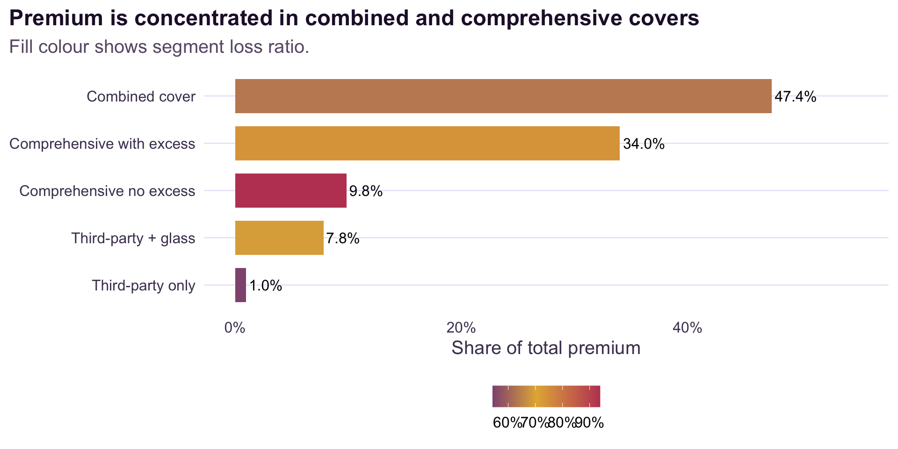
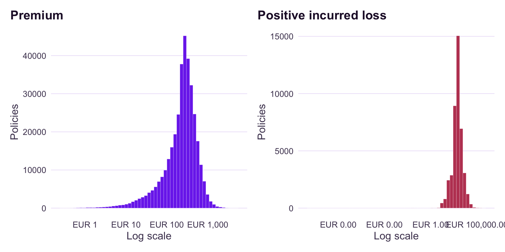
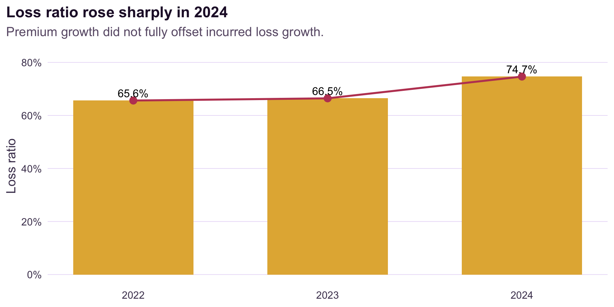
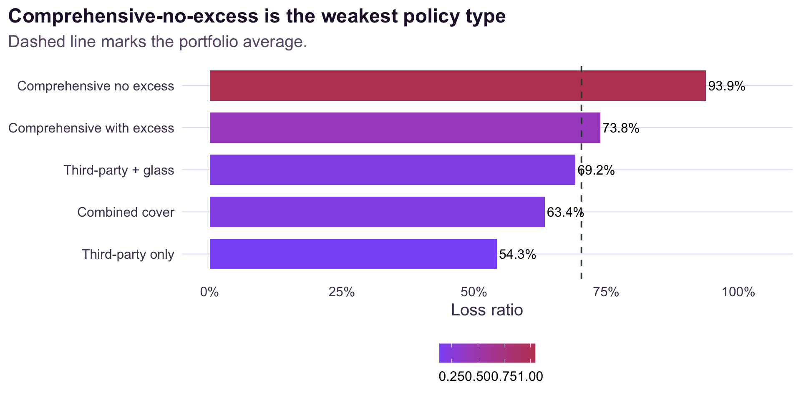
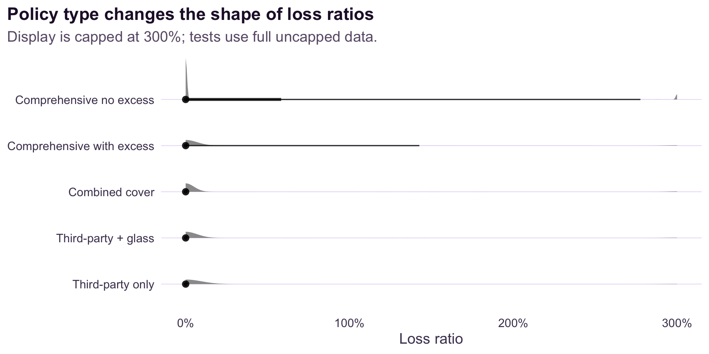
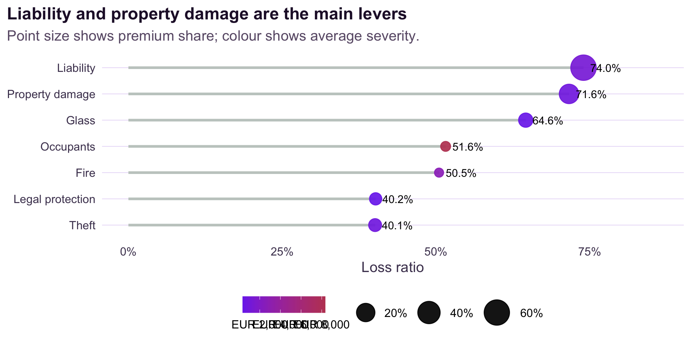
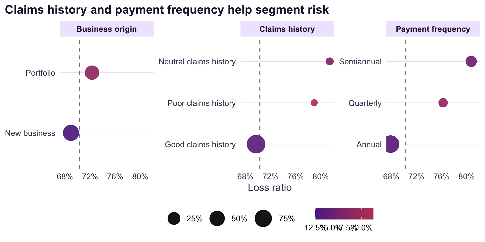
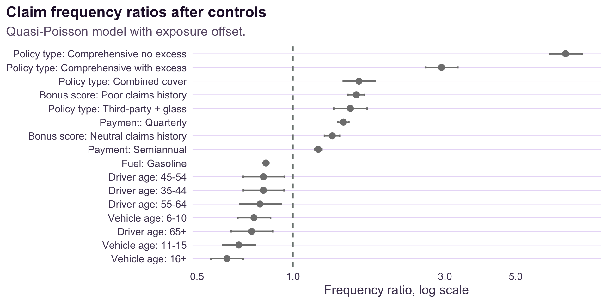
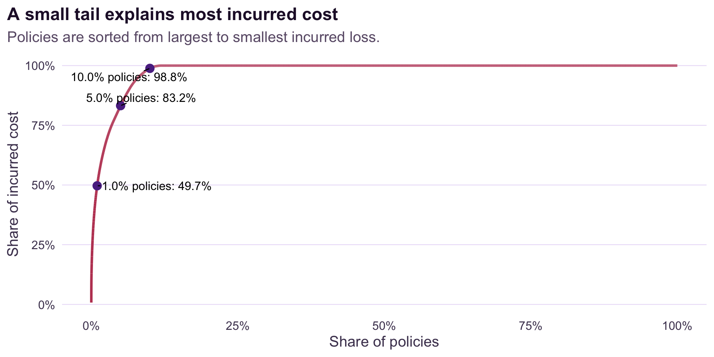

Motor Insurance Portfolio: Profitability and Volatility
ISSS608 Take-home Exercise 1
Jin Zhang
2026-05-01
Contents
1BaselinePortfolio scale, premium, incurred loss and overall loss ratio.
2DistributionPremium shape, incurred loss skew and the policy-level loss tail.
3DriversPolicy type, coverage, claims history and payment frequency.
4ValidationDistribution tests and a claim frequency model with exposure offset.
5ActionsPractical underwriting and monitoring implications.
Portfolio Baseline
Policy transactions354,140185,678 insured IDs across 2022-2024.
Exposure years250,325.9Exposure-weighted comparisons are used for frequency.
Total premiumEUR 105,079,669Portfolio scale before incurred loss.
Total incurredEUR 73,864,811Paid and reserved claim cost.
Loss ratio70.3%Profitable overall, but uneven by segment.
Underwriting profitEUR 31,214,859The headline hides a concentrated claims tail.
Policy Mix

Loss Distribution

88.1% of transactions have zero incurred loss, while 9.0% exceed break-even.
2024 Deterioration

Policy Type Drives Profitability

Volatility Differs by Policy Type

Kruskal-Wallis and Fligner-Killeen tests both return p < 2.2e-16.
Coverage View

Customer Signals

Frequency Model

Tail Concentration

What To Do Next
1. DeductiblesReview comprehensive-no-excess pricing and deductible design.
2. 2024 DrilldownSeparate exposure growth from severity pressure in liability and property damage.
3. Tail WatchMonitor large-loss concentration instead of relying only on averages.
4. SelectionValidate payment and business-origin effects with tenure data.
5. Rating ReviewTest vehicle, fuel and circulation signals as candidate rating refinements.
Limitations
Interpret as portfolio diagnostics, not final pricing indications.The dataset does not include exact geography, claim dates, inflation indices, driving usage, policy tenure, detailed no-claims discount history or external socioeconomic data.
References
Espinosa, P., Lledo, J., & Atance, D. (2026). A detailed dataset of motor insurance policies with coverage-specific financial information. Mendeley Data.
ISSS608 Take-home Exercise 1 assignment brief.
Wickham, H., Cetinkaya-Rundel, M., & Grolemund, G. (2023). R for Data Science, 2e.